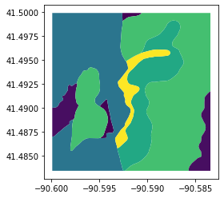
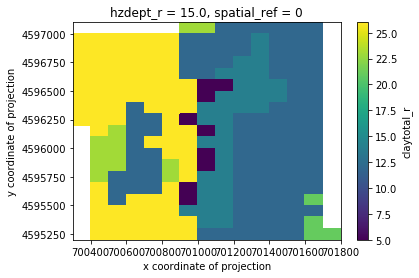

Example - Categorical Data
[1]:
import geopandas as gpd
import pandas
from geocube.api.core import make_geocube
%matplotlib inline
Load in soil data
[2]:
ssurgo_data = gpd.read_file("../../test/test_data/input/soil_data_group.geojson")
[3]:
# original data
ssurgo_data[ssurgo_data.hzdept_r==15].plot(column='sandtotal_r')
[3]:
<matplotlib.axes._subplots.AxesSubplot at 0x7f9e210d3be0>

Generate categories for categorical data
If your data is only a subset of all of the data, the list of categories you get will likely not be complete.
NOTE: The categories will be made unique and sorted internally if they are not already.
[4]:
# this is only a subset of all of the classes
ssurgo_data.drclassdcd.drop_duplicates().values.tolist()
[4]:
['Somewhat poorly drained',
'Poorly drained',
'Well drained',
'Excessively drained']
[5]:
# complete list of categories
drclasses_complete = [
'Poorly drained',
'Somewhat poorly drained',
'Excessively drained',
'Subaqueous',
'Well drained',
'Somewhat excessively drained',
'Very poorly drained',
'Moderately well drained'
]
[6]:
categorical_enums = {'drclassdcd': drclasses_complete}
Convert data to grid
See docs for make_geocube
[7]:
out_grid = make_geocube(
vector_data=ssurgo_data,
output_crs="epsg:32615",
group_by='hzdept_r',
resolution=(-100, 100),
categorical_enums=categorical_enums
)
[8]:
out_grid
[8]:
<xarray.Dataset>
Dimensions: (drclassdcd_categories: 9, hzdept_r: 11, x: 15, y: 19)
Coordinates:
* y (y) float64 4.597e+06 4.597e+06 ... 4.595e+06
* x (x) float64 7.004e+05 7.004e+05 ... 7.018e+05
* hzdept_r (hzdept_r) float64 0.0 5.0 15.0 ... 105.0 120.0 150.0
* drclassdcd_categories (drclassdcd_categories) object 'Excessively drained' ... 'nodata'
spatial_ref int64 0
Data variables:
drclassdcd (hzdept_r, y, x) float64 -1.0 -1.0 -1.0 ... 7.0 7.0
hzdepb_r (hzdept_r, y, x) float64 nan nan nan ... 180.0 180.0
claytotal_r (hzdept_r, y, x) float64 nan nan nan ... 21.0 21.0
sandtotal_r (hzdept_r, y, x) float64 nan nan nan ... 10.0 10.0
silttotal_r (hzdept_r, y, x) float64 nan nan nan ... 69.0 69.0
Attributes:
grid_mapping: spatial_ref[9]:
# mask nodata and plot
clay_slice = out_grid.claytotal_r.sel(hzdept_r=15)
clay_slice.where(clay_slice!=out_grid.claytotal_r.rio.nodata).plot()
[9]:
<matplotlib.collections.QuadMesh at 0x7f9e1e823748>

Dealing with categorical data
Because the data needs to be numerical for conversion from vector to raster, the code displays the categories as numbers. To convert back to strings, you will need to use the categories provided to convert back.
[10]:
drclassdcd_slice = out_grid.drclassdcd.sel(hzdept_r=15)
drclassdcd_slice.where(drclassdcd_slice!=out_grid.drclassdcd.rio.nodata).plot()
[10]:
<matplotlib.collections.QuadMesh at 0x7f9e1e76bc50>

[11]:
drclassdcd_string = out_grid['drclassdcd_categories'][out_grid['drclassdcd'].astype(int)]\
.drop('drclassdcd_categories')
[12]:
out_grid['drclassdcd'] = drclassdcd_string
out_grid
[12]:
<xarray.Dataset>
Dimensions: (drclassdcd_categories: 9, hzdept_r: 11, x: 15, y: 19)
Coordinates:
* y (y) float64 4.597e+06 4.597e+06 ... 4.595e+06
* x (x) float64 7.004e+05 7.004e+05 ... 7.018e+05
* hzdept_r (hzdept_r) float64 0.0 5.0 15.0 ... 105.0 120.0 150.0
* drclassdcd_categories (drclassdcd_categories) object 'Excessively drained' ... 'nodata'
spatial_ref int64 0
Data variables:
drclassdcd (hzdept_r, y, x) object 'nodata' ... 'Well drained'
hzdepb_r (hzdept_r, y, x) float64 nan nan nan ... 180.0 180.0
claytotal_r (hzdept_r, y, x) float64 nan nan nan ... 21.0 21.0
sandtotal_r (hzdept_r, y, x) float64 nan nan nan ... 10.0 10.0
silttotal_r (hzdept_r, y, x) float64 nan nan nan ... 69.0 69.0
Attributes:
grid_mapping: spatial_ref[13]:
pdf = out_grid.drop(['spatial_ref', 'drclassdcd_categories']).to_dataframe()
pdf.head()
[13]:
| drclassdcd | hzdepb_r | claytotal_r | sandtotal_r | silttotal_r | |||
|---|---|---|---|---|---|---|---|
| hzdept_r | x | y | |||||
| 0.0 | 700350.0 | 4597050.0 | nodata | NaN | NaN | NaN | NaN |
| 4596950.0 | Well drained | 5.0 | 26.0 | 38.0 | 36.0 | ||
| 4596850.0 | Well drained | 5.0 | 26.0 | 38.0 | 36.0 | ||
| 4596750.0 | Well drained | 5.0 | 26.0 | 38.0 | 36.0 | ||
| 4596650.0 | Well drained | 5.0 | 26.0 | 38.0 | 36.0 |
Make sure all categories are represented
To do this, convert the column type to categorical beforehand and make sure that you include all of the possible categories.
[14]:
cat_dtype = pandas.api.types.CategoricalDtype(out_grid.drclassdcd_categories.values)
pdf['drclassdcd'] = pdf['drclassdcd'].astype(cat_dtype)
[15]:
training_df = pandas.get_dummies(pdf, columns=['drclassdcd'])
training_df.head()
[15]:
| hzdepb_r | claytotal_r | sandtotal_r | silttotal_r | drclassdcd_Excessively drained | drclassdcd_Moderately well drained | drclassdcd_Poorly drained | drclassdcd_Somewhat excessively drained | drclassdcd_Somewhat poorly drained | drclassdcd_Subaqueous | drclassdcd_Very poorly drained | drclassdcd_Well drained | drclassdcd_nodata | |||
|---|---|---|---|---|---|---|---|---|---|---|---|---|---|---|---|
| hzdept_r | x | y | |||||||||||||
| 0.0 | 700350.0 | 4597050.0 | NaN | NaN | NaN | NaN | 0 | 0 | 0 | 0 | 0 | 0 | 0 | 0 | 1 |
| 4596950.0 | 5.0 | 26.0 | 38.0 | 36.0 | 0 | 0 | 0 | 0 | 0 | 0 | 0 | 1 | 0 | ||
| 4596850.0 | 5.0 | 26.0 | 38.0 | 36.0 | 0 | 0 | 0 | 0 | 0 | 0 | 0 | 1 | 0 | ||
| 4596750.0 | 5.0 | 26.0 | 38.0 | 36.0 | 0 | 0 | 0 | 0 | 0 | 0 | 0 | 1 | 0 | ||
| 4596650.0 | 5.0 | 26.0 | 38.0 | 36.0 | 0 | 0 | 0 | 0 | 0 | 0 | 0 | 1 | 0 |
[16]:
training_df.columns
[16]:
Index(['hzdepb_r', 'claytotal_r', 'sandtotal_r', 'silttotal_r',
'drclassdcd_Excessively drained', 'drclassdcd_Moderately well drained',
'drclassdcd_Poorly drained', 'drclassdcd_Somewhat excessively drained',
'drclassdcd_Somewhat poorly drained', 'drclassdcd_Subaqueous',
'drclassdcd_Very poorly drained', 'drclassdcd_Well drained',
'drclassdcd_nodata'],
dtype='object')